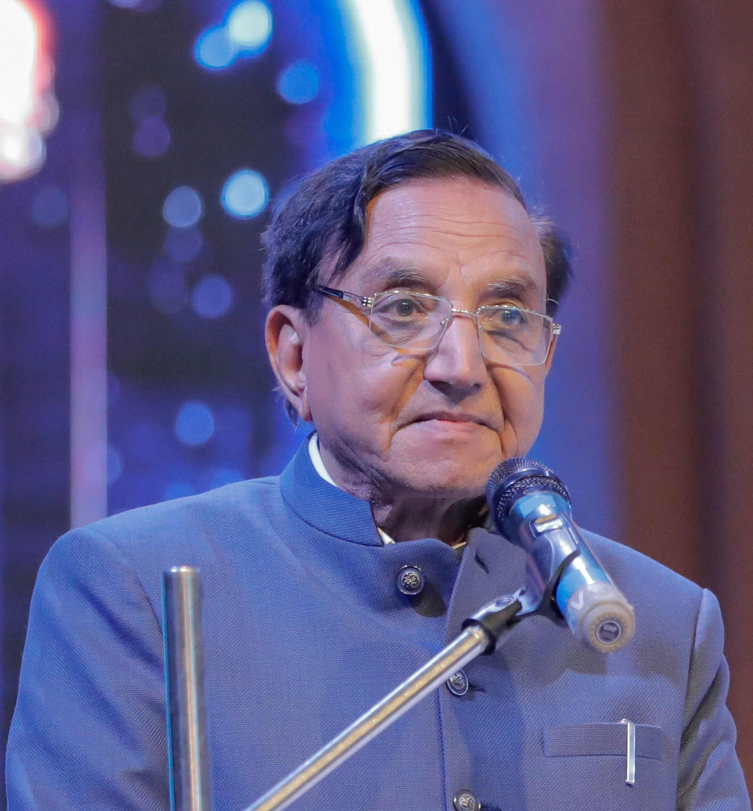

Our Founders

Dr. Nimaben Acharya
Founder of Manav Seva Trust, Ex-Speaker of Gujarat Legislative Assembly. A visionary leader and social reformer committed to uplifting vulnerable children.

Dr. Bhavesh F. Acharya
Co-Founder of Manav Seva Trust and Ex-Chairman of Gujarat Red Cross. A pillar of strength who continues to guide the trust’s humanitarian efforts.